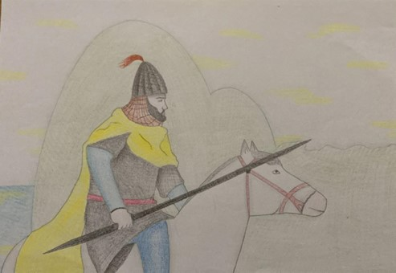

Ben Seyyid Battal Gazi… Asıl adım Cafer’dir. Malatya’da ordu serdarı Hüseyin Gazi’nin oğlu olarak dünyaya geldim. Babam Bizanslılar tarafından şehit edildiği için üç yaşında yetim kaldım. On üç yaşıma bastığımda babamın öcünü onu öldüren Bizanslılardan aldım ve babamın yerine Malatya’ya ordu komutanı (serdar) oldum. Savaşlarımın sahası genellikle Anadolu ve özellikle de Malatya bölgesi olmuştur. “Aşkar Divzade” adlı tanınmış atıma binerek daha çocuk yaştan itibaren yalnız başıma türlü yerlere gittim. Çok cesur ve silah kullanmada çok usta biriydim. Hileye de sık sık başvururdum. Hilelerle en korkunç düşmanlarımı yendim. Çeşitli kereler tutsak düştüm ama her defasında kurtuldum. Kötülükten ve her türlü dini yasaktan çok çekinen, çok dindar, keramet sahibi biriydim. Sadece İslam ilimlerine değil, Hıristiyanlık hükümlerine de derinlikli bir şekilde vakıftım. İyi bir konuşmacı yani hatiptim. Dini konularda bütün hocalar, keşişler ilmime hayran olurlardı. Bütün mücadelem Rum diyarını, yani Anadolu’yu İslam hakimiyeti altına sokmak ve bu uğurda şehit olmaktı. Anadolu’yu İslam hakimiyetine soktum, İstanbul’u aldım ve sonunda şehitlik makamına da eriştim.
